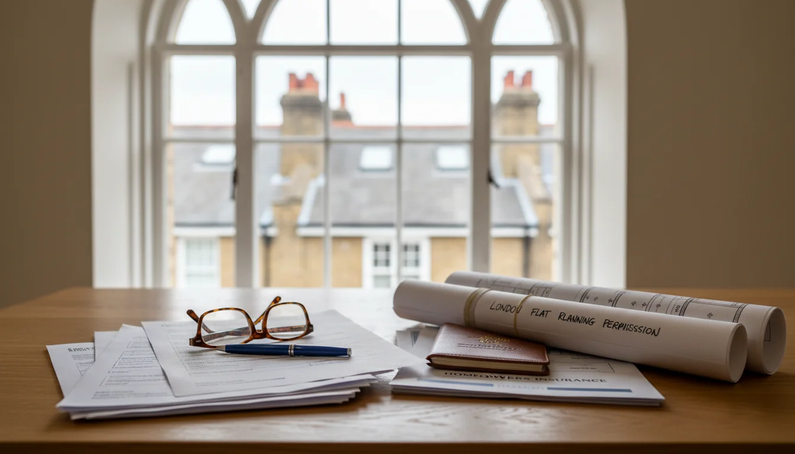
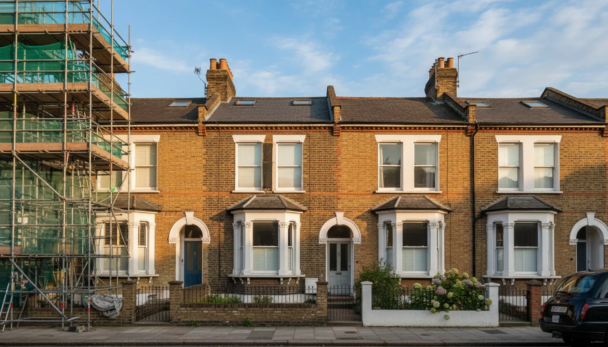

מה צריך לדעת לפני שיפוץ בלונדון - המדריך המעשי
למה שלב ההכנה הוא בעצם חצי מהפרויקט
בישראל קונים דירה ביום ראשון, הקבלן מגיע ביום שלישי, וביום חמישי כבר שוברים קירות. בלונדון - לא. בלונדון יש שלב שלם של הכנה שמגיע לפני שמישהו נוגע בפטיש, והשלב הזה לוקח חודשים.
מה צריך לדעת לפני שיפוץ בלונדון? בעיקר את זה: ההכנה היא לא בזבוז זמן. ההכנה היא הפרויקט. מי שמדלג עליה, או עושה אותה בחצי לב, מפסיד חודשים בהמשך - ובלונדון חודשים עולים כסף רציני.
בעשרים השנים שלי פה ראיתי את זה שוב ושוב. משפחות ישראליות שקנו דירה, רצו ישר לשיפוץ, ואז נתקעו. כי לא היה סקר מבנה. כי לא בדקו את ה- lease. כי לא ידעו שצריך party wall agreement. כי חשבו ש- planning permission זה הכל - ולא ידעו שיש מערכת נפרדת שנקראת building regulations. כל אחת מהטעויות האלה? שלושה חודשים עיכוב. לפחות.
ואם המשפחה מתכננת להגיע באוגוסט ולהיכנס לדירה מוכנה - אין מרווח לטעויות. שלב ההכנה בלונדון לוקח 3-6 חודשים, ולפעמים יותר. מי שמתחיל בינואר ברמה אופטימית מגיע לאוגוסט. מי שמתחיל במרץ - לא.
קניתם דירה וצריכים לדעת מה לסדר מיד? התחילו שם. המאמר הזה עוסק בשלב שאחרי - מה צריך להיות מוכן לפני שמתחילים שיפוץ.
מי האנשים שאתם צריכים - ובאיזה סדר
בישראל מזמינים קבלן ומתחילים. בלונדון צריך צוות שלם, ויש סדר. אם תמנו את האנשים הלא נכונים, או בסדר הלא נכון - תיתקעו.
אדריכל (architect) - הוא הראשון. אם יש שינוי במבנה, הרחבה, או כל דבר שדורש planning permission או building regulations, אתם צריכים אדריכל שיכין תוכניות. בלי תוכניות אין הצעות מחיר אמיתיות, אין הגשה ל- building control, אין כלום. חפשו אדריכל שרשום ב- RIBA או ARB ויש לו ניסיון עם נכסים דומים לשלכם. דירה ויקטוריאנית ב- Hampstead זה לא אותו דבר כמו mansion flat מודרני ב- Marylebone.
מעצבת פנים - ברגע שהתוכניות המבניות ברורות, מעצבת הפנים מתחילה לעבוד על חומרים, גימורים, מטבח, חדרי אמבטיה, תאורה. היא צריכה לעבוד במקביל לאדריכל, לא אחריו - כי הבחירות שלה משפיעות על המפרט הטכני. אם המשפחה מגיעה עם ילדים לשלושה שבועות באוגוסט, העיצוב צריך לעבוד גם לזוג וגם לארבעה ילדים - וזה משפיע על תכנון החדרים, המטבח, ואחסון.
מהנדס קונסטרוקציה (structural engineer) - אם מורידים קיר נושא, פותחים RSJ, או עושים כל שינוי מבני - המהנדס חייב לאשר. הוא מכין חישובים שנדרשים ל- building regulations. בלי חישובים של מהנדס, building control לא יאשר את העבודה. בדירות ויקטוריאניות - ויש הרבה כאלה באזורים שישראלים קונים בהם - הקירות לא תמיד נושאים מה שחושבים. מהנדס טוב חוסך מפתעות באמצע עבודה.
quantity surveyor - לא חובה בכל פרויקט, אבל בשיפוצים מעל £150,000 - ויש הרבה כאלה בשכונות שישראלים קונים בהן - הוא שווה את ההשקעה. הוא מכין BOQ מפורט (bill of quantities) ובודק שהצעות המחיר של הקבלנים סבירות. כשאתם 3,500 קילומטר מהדירה, מנהלים שיפוץ מרחוק, מישהו שמגן על הכסף שלכם הוא לא מותרות.
principal designer (CDM) - על זה נדבר בהמשך. אבל דעו שכל פרויקט עם יותר מקבלן אחד דורש מינוי בכתב של principal designer לפי חוק ה- CDM.
הסדר חשוב. אדריכל ראשון, מעצבת פנים ומהנדס במקביל, ואז קבלן. לא הפוך. בישראל הרבה פעמים הקבלן מביא את כולם - בלונדון, אתם בונים את הצוות, או שמישהי שמכירה את כל השחקנים בונה אותו בשבילכם.
הצעות מחיר - מה צריך להיות מוכן לפני שמבקשים
ישראלים מתקשרים לקבלן ואומרים "תבוא, תראה, תגיד כמה." בלונדון זה לא עובד ככה. קבלנים בריטיים עובדים אחרת - הם צריכים מסמכים לפני שהם יכולים לתת הצעת מחיר אמיתית.
מה צריך להיות מוכן:
- תוכניות אדריכליות - הרישומים של האדריכל שמראים מה בדיוק משתנה
- מפרט טכני (specification) - רשימה מפורטת של חומרים, גימורים, סוגי אריחים, סוג המטבח. ככל שהמפרט מדויק יותר, ההצעה מדויקת יותר
- schedule of works - פירוט של כל העבודות לפי שלבים: פירוק, שלד, חשמל, אינסטלציה, גמר. זה מה שמאפשר לקבלן לתת quotation ולא רק estimate
- חישובי מהנדס - אם יש עבודה מבנית
בלי המסמכים האלה, תקבלו estimate - אומדן גס שיכול להשתנות ב-30% ויותר. עם המסמכים, תקבלו quotation - מחיר קבוע ומחייב. ההבדל הוא עשרות אלפי פאונד.
ועוד דבר שישראלים לא מצפים לו: קבלנים טובים בלונדון תפוסים שלושה עד שישה חודשים קדימה. אם אתם רוצים שלושה קבלנים שיגישו הצעות - ותמיד כדאי לקבל לפחות שלוש - תתחילו את התהליך הרבה לפני שאתם חושבים. המסמכים צריכים להיות מוכנים חודשים לפני שאתם רוצים שהעבודה תתחיל.

 איך קבלנים מקומיים מתמחרים - ומה באמת לצפותקבלני שיפוצים לונדון עובדים אחרת ממה שאתם מכירים מישראל. הצעות מחיר, לוחות זמנים, תקשורת, תשלומים - הכל שונה. ככה מתנהלים מולם בלי להשתגע.
איך קבלנים מקומיים מתמחרים - ומה באמת לצפותקבלני שיפוצים לונדון עובדים אחרת ממה שאתם מכירים מישראל. הצעות מחיר, לוחות זמנים, תקשורת, תשלומים - הכל שונה. ככה מתנהלים מולם בלי להשתגע.
building regulations מול planning permission - שני דברים שונים
בישראל יש היתר בנייה - מערכת אחת שמכסה הכל. בלונדון יש לפחות שלוש מערכות נפרדות שלא מדברות אחת עם השנייה, וכל אחת יכולה לעצור לכם את הפרויקט בנפרד.
| מערכת | השאלה שהיא שואלת | מתי צריך | לוח זמנים |
|---|---|---|---|
| planning permission | מותר לעשות את השינוי הזה? | שינוי חזית, תוספת שטח, conservation area | 8 שבועות רשמית, 3-6 חודשים במציאות |
| building regulations | השינוי הזה בטוח? | שינוי מבני, חשמל, אינסטלציה, בידוד | building notice: 48 שעות, full plans: 5 שבועות |
| Licence to Alter | בעל ה- freehold מאשר? | כל שינוי מבני בדירת leasehold | שבועות עד חודשים |
planning permission - שואלת: מותר לכם לעשות את השינוי הזה? זה עניין של מראה חיצוני, התאמה לסביבה, שימוש בנכס. ה- council המקומי מחליט. לא כל שיפוץ דורש planning permission - שינויים פנימיים שלא משנים את מבנה הבניין בדרך כלל פטורים. אבל אם אתם משנים חזית, מוסיפים שטח, או שהנכס נמצא ב- conservation area - תצטרכו. ולוח הזמנים? 8 שבועות רשמית, 3-6 חודשים במציאות. הכל על planning permission בלונדון - כתבתי על זה לעומק במאמר נפרד.
building regulations - שואלות: השינוי הזה בטוח? building regulations עוסקות בבטיחות מבנית, בידוד, חשמל, אינסטלציה, נגישות, ואוורור. גם אם לא צריך planning permission - אם אתם מורידים קיר, מחליפים חלונות, משנים חשמל, מוסיפים חדר אמבטיה, או מחליפים קולטי חום - סביר מאוד שתצטרכו building regulations. הבדיקות נעשות בשלבים: building control inspector מגיע לאתר בנקודות מפתח - אחרי חפירות, אחרי שלד, אחרי בידוד, ובסוף. אם הוא מגיע ורואה שמשהו לא תואם - תתקנו ותזמנו אותו שוב. זה לוקח זמן, אבל בסוף מקבלים completion certificate, וזה מסמך שתצטרכו כשתבואו למכור את הנכס. ההגשה ל- building control נעשית דרך building notice (פשוט יותר, אישור תוך 48 שעות) או full plans application (לוקחת עד חמישה שבועות, אבל נותנת אישור מלא מראש).
Licence to Alter - בדירות leasehold, ורוב הדירות בלונדון הן leasehold, צריך גם אישור מבעל ה- freehold. שינוי מבני בלי Licence to Alter זו הפרה של ה- lease. התהליך לוקח שבועות עד חודשים, ולפעמים כולל דרישות שמוסיפות עלות - כמו שימוש בקבלנים מאושרים או שעות עבודה מוגבלות.
הנקודה הקריטית: שלוש מערכות נפרדות, שלושה לוחות זמנים שונים, שלוש הגשות שונות. אפשר להריץ חלק מהן במקביל - ומעצבת שמכירה את הסדר יודעת מה אפשר לחפוף ומה חייב להמתין. אבל אם תתעלמו מאחת מהן, תגלו את זה בדרך הקשה.

party wall - השכנים חלק מהתהליך
אם הדירה חולקת קיר עם דירה שכנה - וברוב הדירות בלונדון זה המצב - ואתם מתכננים לעבוד על הקיר הזה או לידו, אתם חייבים party wall agreement לפי חוק ה- Party Wall Act 1996.
בישראל, אם אתם רוצים להזיז קיר משותף, אתם מדברים עם השכן ומסתדרים. בלונדון יש תהליך חוקי מסודר. צריך לשלוח הודעה רשמית לשכנים חודשיים לפני תחילת העבודה. אם הם מסכימים בכתב - נהדר, אפשר להמשיך. אם הם לא מגיבים תוך 14 יום, זה נחשב מחלוקת. ממנים party wall surveyor שבודק את הנכסים משני הצדדים ומכין party wall award - מסמך שמגדיר מה מותר לעשות ומה קורה אם נגרם נזק. אתם משלמים על הסרוייר שלהם גם - כן, גם אם הם אלה שמקשים.
עלויות: £750-1,800 לסרוייר לשכן. בדירה עם שני שכנים, תקצבו £3,000-7,200 לתהליך. פרויקטים עם עבודות מרתף יכולים להגיע ליותר מ-£12,000.
לוח זמנים: 6-8 שבועות בתרחיש פשוט, יותר אם יש סכסוך.
הנקודה: אל תשאירו את זה לדקה האחרונה. תתחילו את תהליך ה- party wall מיד אחרי שאישור ה- planning (אם צריך) מגיע. ושימו לב - גם אם אתם לא נוגעים בקיר עצמו, אם אתם חופרים מרתף או עושים עבודות יסוד בטווח שלושה מטרים מהקיר המשותף, ייתכן שתצטרכו party wall notice.
CDM - החוק שאף ישראלי לא שמע עליו
בישראל, הקבלן אחראי על הבטיחות באתר. בלונדון - גם אתם. וזה מפתיע כל לקוח ישראלי שאני עובדת איתו.
CDM - Construction (Design and Management) Regulations 2015 - הם חוק שקובע שגם הלקוח (client) אחראי לבטיחות בפרויקט בנייה. כבעלי הדירה, יש לכם חובות: לספק מידע על הנכס (סקרים, תוכניות, מידע על חומרים מסוכנים כמו אסבסט), למנות אנשי מקצוע מתאימים, ולוודא שהפרויקט מנוהל בצורה בטוחה. אי עמידה בחובות אלה יכולה לגרור קנסות מ- HSE (Health and Safety Executive) ואפילו אחריות פלילית במקרים חמורים.
אם בפרויקט עובד יותר מקבלן אחד - וברוב השיפוצים בלונדון זה המצב (קבלן כללי, חשמלאי, אינסטלטור) - אתם חייבים למנות בכתב principal designer ו- principal contractor.
מי יכול להיות principal designer? האדריכל, מעצבת הפנים, או כל מקצוען מוסמך שלוקח על עצמו את התפקיד. הוא אחראי לתכנון, ניהול ותיאום הבטיחות בשלב התכנון.
החדשות הטובות: כלקוח ביתי (domestic client), אפשר להעביר את רוב החובות ל- principal designer בהסכם בכתב. אבל - וזה חשוב - אם לא מיניתם אף אחד בכתב, החובות נשארות אצלכם כברירת מחדל. ואם משהו קורה באתר בנייה, אתם חשופים אישית.
בפועל, תבקשו מהאדריכל או ממעצבת הפנים לקחת על עצמם את תפקיד ה- principal designer. רוב אנשי המקצוע הרלוונטיים מכירים את הנושא ויודעים מה נדרש.
כשאתם יושבים בישראל ומנהלים שיפוץ מרחוק, CDM הוא בדיוק הסוג של דבר שחייבים לסדר מראש - לא משהו שמגלים בדיעבד.
ביטוח בזמן שיפוץ - מה צריך ולמה
רוב הישראלים חושבים שהביטוח של הקבלן מכסה הכל. זה לא נכון.
ביטוח הקבלן (contractor's all risks) מכסה את העבודה שלו - לא את המבנה הקיים שלכם. אם צינור מים נפרץ באמצע שיפוץ ומציף את הדירה של השכן מתחת - הביטוח של הקבלן מכסה את מה שהוא שבר. הנזק לדירת השכן ולמבנה הקיים? זה עליכם.
וזה לא מצב תיאורטי. נזקי מים הם הסיבה הנפוצה ביותר לתביעות ביטוח באתרי בנייה ביתיים בלונדון. צנרת ויקטוריאנית מזדקנת, עבודות פירוק חושפות בעיות שלא ידעתם עליהן, וכשאתם 3,500 קילומטר מהדירה - אתם לא יכולים לרוץ ולסגור את הברז הראשי.
מה אתם צריכים:
| ביטוח | מה מכסה | מי אחראי |
|---|---|---|
| contract works insurance | עבודות בתהליך, חומרים באתר | אתם |
| public liability | נזק לצד שלישי - שכנים, עוברי אורח | הקבלן (ודאו) |
| building insurance | המבנה הקיים - חייבים להודיע על שיפוץ | אתם |
contract works insurance - מכסה את העבודות בתהליך. אם סערה, שריפה, או ונדליזם הורסים עבודה שכבר בוצעה - הפוליסה מכסה את עלות השחזור. היא גם מכסה חומרי בנייה שנמצאים באתר ונגנבו או ניזוקו. בפרויקט של £200,000 ומעלה, הפוליסה הזו עולה מאות בודדות של פאונד - ביחס לסיכון, זה כלום.
public liability - מכסה נזק לצד שלישי. השכן מתחת, עוברים ושבים, כל מי שנפגע מהעבודות שלכם. הקבלן אמור להביא את שלו, אבל ודאו שזה בתוקף ושהכיסוי מספיק - בקשו לראות את הפוליסה לפני שהעבודה מתחילה.
building insurance - הביטוח הקיים על המבנה. חשוב: חייבים להודיע למבטח לפני שמתחילים שיפוץ. שינויים מבניים בלי הודעה יכולים לבטל את הפוליסה. זה אומר שאם קורה נזק - אפילו כזה שלא קשור לשיפוץ - אתם לא מכוסים. ראיתי מקרה שבו צינור נפרץ בדירה מעל, גרם נזק לתקרה, והמבטח סירב לשלם כי הבעלים לא דיווח על עבודות שיפוץ פעילות.
כשאתם בישראל ומשהו קורה בדירה בלונדון, הביטוח הוא הדבר היחיד שעומד ביניכם לבין חשבון של עשרות אלפי פאונד. אל תחסכו בזה. הפוליסה צריכה להיות פעילה לפני שהעבודה מתחילה, לא אחרי. זה נשמע מובן מאליו, אבל יותר מפעם אחת ראיתי בעלי דירות שהתחילו פירוק בלי שהביטוח היה בתוקף.
אם אתם רוצים את התמונה המלאה של כל העלויות שסביב נכס בלונדון, כולל ביטוח, service charge, ו- council tax - כתבתי על זה מדריך מפורט.
רשימת הכנה - הכל במקום אחד
לפני שקבלן נכנס לדירה, ודאו שכל הדברים האלה במקום:
- סקר מבנה (building survey) - בוצע, ממצאים ברורים
- עותק של ה- lease - קראתם אותו, מבינים את ההגבלות
- אדריכל - ממונה, תוכניות מוכנות
- מעצבת פנים - ממונה, מפרט חומרים מתקדם
- מהנדס קונסטרוקציה - ממונה (אם יש שינוי מבני), חישובים מוכנים
- planning permission - מוגשת או מאושרת (אם נדרשת)
- building regulations - בקשה מוגשת ל- building control
- Licence to Alter - מוגשת או מאושרת (דירת leasehold)
- party wall agreement - הודעות נשלחו, הסכם חתום או award מוכן
- CDM - principal designer ו- principal contractor ממונים בכתב
- ביטוח - contract works, public liability, הודעה למבטח הקיים
- תקציב - כולל 15-20% contingency. לפחות. אם הנכס ויקטוריאני עם period features - תקצבו 20%.
אם פריט אחד מהרשימה לא מסודר, אתם לא מוכנים להתחיל. זה נשמע קשוח, אבל זה עדיף מלגלות באמצע השיפוץ שצריך party wall agreement - ולעצור הכל לחודשיים. ראיתי את זה קורה. ראיתי משפחות שהגיעו מישראל עם שלושה ילדים באוגוסט לדירה שהמטבח שלה עדיין בפירוק, כי מישהו דילג על שלב בהכנה.
אל תהיו המשפחה הזו.
הרשימה הזו היא בדיוק מה שאני עוברת עם כל לקוח לפני שהקבלן נכנס לדירה. עוד על איך אני עובדת.
- שלב ההכנה לוקח 3-6 חודשים - לפני שמישהו נוגע בפטיש. מי שמדלג, מפסיד חודשים בהמשך
- בלונדון יש שלוש מערכות אישורים נפרדות: planning permission, building regulations, ו- Licence to Alter. כל אחת יכולה לעצור את הפרויקט
- CDM - כבעלי הדירה אתם אחראים משפטית לבטיחות באתר. אם לא מיניתם principal designer בכתב, החובות נשארות אצלכם
- party wall agreement עולה £3,000-7,200 ולוקח 6-8 שבועות. אל תשאירו את זה לדקה האחרונה
- ביטוח הקבלן לא מכסה את המבנה שלכם. אתם צריכים contract works insurance ולהודיע למבטח הקיים לפני שמתחילים
אחרי שכל ההכנה במקום, אפשר לגשת לשיפוץ עצמו - ושם מחכים לוחות זמנים ועלויות שכדאי להכיר. ואם הנכס הוא מבנה רשום, ההכנה מורכבת עוד יותר - כל שינוי, גם הקטן ביותר, דורש אישור נפרד.